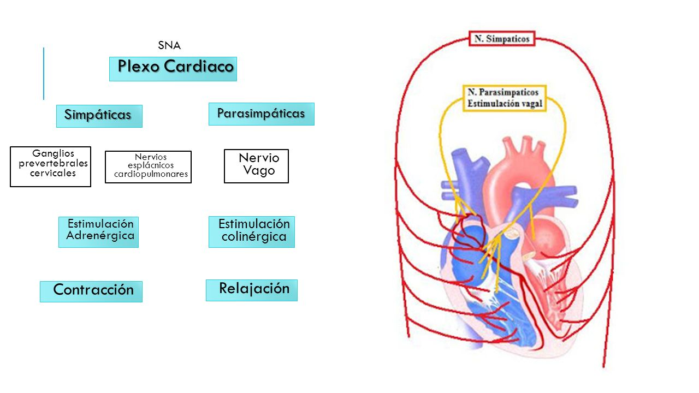

Inervación

El tejido nodal asegura al corazón un funcionamiento automático cuya frecuencia es sensible a la acción de las fibras cardiomoderadoras del parasimpático y a la acción cardioaceleradora del simpático. El parasimpático está representado por ramas que proceden del neumogástrico y el simpático por ramas del plexo cervical. Estas ramas derivadas del neumogástrico y del simpático forman el plexo cardíaco.
Ver video